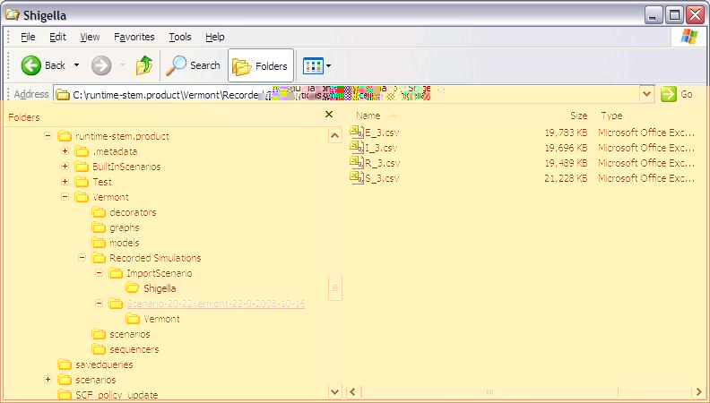
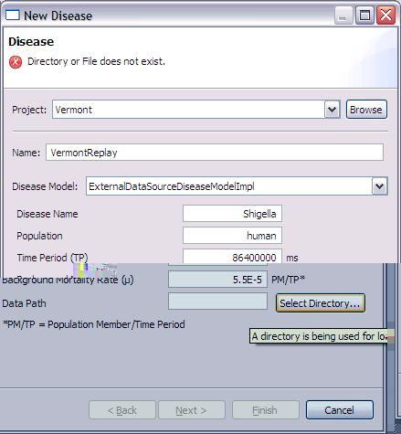
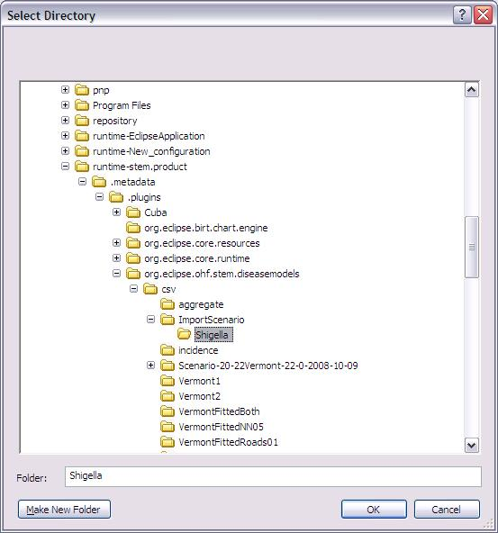
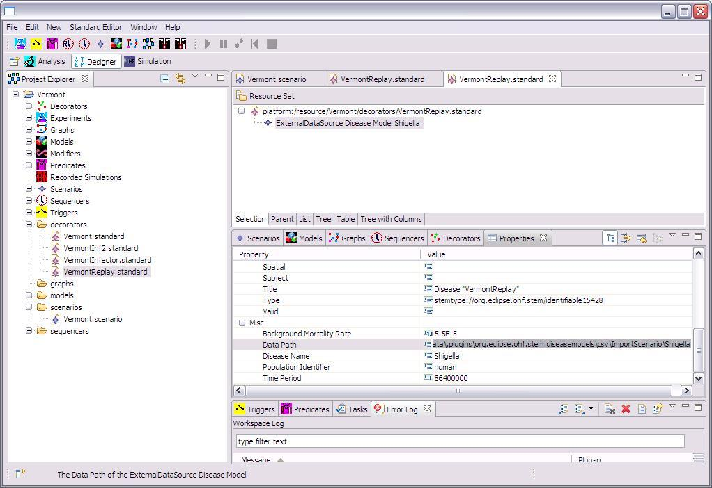

Overview:
STEM also allows users to import data from one or more external files and to
play them back. Today, import is supported for Comma Separated Variable (CSV)
files.
Organizing the Data Files:
The individual files or collections of files for a particular scenario should be grouped in a single folder. In figure 1a we show a collection of files, all containing Shigella data, grouped in a folder called "ScenarioShigella". This folder can have any name and be placed in any location. In the example below we place the folder in the same location that STEM typically exports data to, namely:
... runtime-stem.product\<project>\Recorded Simulations\
Where your runtime-stem.product\ is typically located n C:\runtime-stem.product\ in a default Eclipse installation.
To import data, it is necessary that a CSV file be created for each state modeled by the disease. Each file name should be the disease state identifier (e.g. S, E, I or R) followed by an underscore character (_) followed by a number. The number indicates the geographical resolution for locations contained in the file. For instance, 3 represents locations at administration level 3 (US cities). In Figure 1a we show several files containing data for the S, E, I and R states at administration level 3. The file extension should be .csv.
For information on how to export data, please see the documentation on the CSV Logger View.
|  |
| Figure 1a: Organizing your data to prepare to import into STEM. |
Each CSV file should contain a header indicating the domain of data in each column. The first column should contain a sequential iteration or row number and the header label must be 'iteration'. The second column should contain the time the data applies to (each row should be sequential in time) with header label 'time'. The following columns headers should indicate the unique STEM location ID for which data in that column belongs to, and the values in each row is the count (individuals) at the location in the state represented by the file. If the data is from syndromic surveillance users will likely not have information on every possible state but when importing you must have files and file headers for each state that you want to display. STEM determines the type of the disease by checking which files are available when importing data, so if for example STEM finds an S_3.csv and I_3.csv file but no E_3.csv or R_3.csv file it will assumed the disease is of type SI. Note that the data in each column must be total count (individuals) and not fraction in each state. The numbers may be floating point (allowing fractional people infected for example).
|
iteration, time, US-VT-50013-67000, US-VT-50027-77500, US-VT-50021-16825, US-VT-50021-75925 |
|
Table 1: The CSV file must label the locations you plan to import
into STEM (see text) |
In order to actually import the data into STEM you must create a
scenario. The external data will be read by adding a special disease model
called a "ExternalDataSourceDiseaseModel" to your scenario. Follow the
instructions for creating a scenario. Your
scenario must contain
a model and
graph that contains the same set of the regions named in your collection of
data files. So if you want to play back data on US counties,
you must add all the US counties to your model.
When you are ready to add the ExternalDataSourceDiseaseModel
to your scenario (under the model node), click on the icon for
adding a new disease.
specify your project and give the disease a name. Select
ExternalDataSourceDiseaseModel as the disease model. You must then tell the
ExternalDataSourceDiseaseModel
the location of your data file(s). You may use the selector buttons to the
right of Data Path. A "Select Directory" dialog (figure 1c) will appear allowing
you to select a directory that contains the data files you wish to play back.
|  |  |
| Figure 1b: Creating an ExternalDataSourceDiseaseModel | Figure 1c: Select the Directory that Contains your data |
Once you have created a scenario set up to Replay a disease from an external
file you can also edit the data path using the Properties Editor. Just go
to your project, find the ExternalDataSourceDiseaseModel you
created
under the "decorators" folder, and double click on it in the Resource Set
window (See figure 2). The Editor will show up allowing you to change this path
used to read in data.
|  |
| Figure 2: Changing the Data Path in the Properties Editor |
Once you have completed setting up your scenario, Save your work at this point by hitting ctrl-s
To replay your data, simply select the scenario you created in the STEM
project explorer, right click, and select run. STEM will launch, load the
locations you specified
and play back your data.